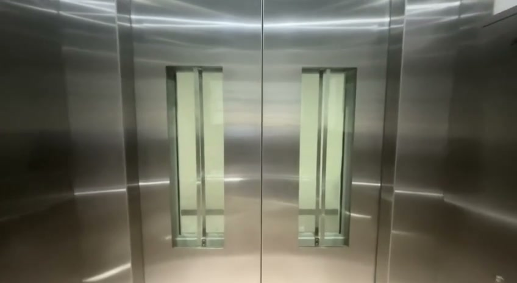
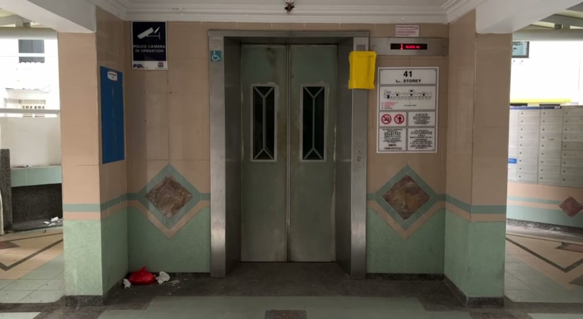

The doors are opening
In your mind, the block becomes a place everyone has left behind.
Return to the corridorLook around. The openings and gates may lead somewhere.
This view could not load. Please try again.


In your mind, the block becomes a place everyone has left behind.
Return to the corridorLook around. The openings and gates may lead somewhere.
This view could not load. Please try again.